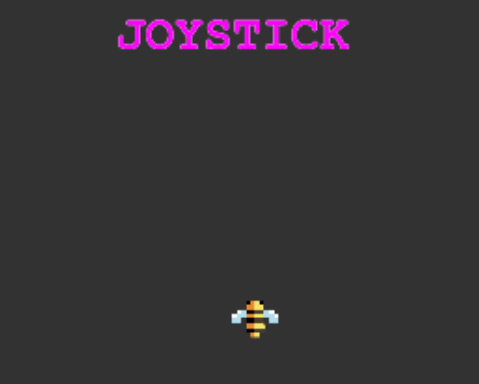

Gecko Blaster
A Post Mortem
Background
Js13kGames is an annual game jam that challenges developers to craft a game within a measly 13KB limit. The tools at your disposal are plain old HTML, JavaScript, and CSS. No fancy fonts or frameworks — just the basics. These limitations encourage creativity. In a web landscape dominated by bloated libraries, convoluted tooling, and an overwhelming torrent of new versions, it's refreshing to step back and build something from scratch.
The Theme
This year's theme was Triskaidekaphobia, or fear of the number 13. Hmm... okay, so something spooky? Honestly, I couldn’t think of a killer hook for the theme, and with time running out, I decided to just get cracking. I had a clear idea of the kind of game I wanted to make:
- Fast paced, frentic and fun.
- Retro style, evoking the glory days of 8bit/16bit games (yep, I'm showing my age!)
- Mobile-friendly. Although mobile gaming hasn’t quite lived up to its early promise, it can still provide a fun-filled five minutes.
The idea
I've always wanted to make a top-down shoot 'em up, so that was
a logical starting point. After brainstorming and a few false
starts, I landed on the rather random idea of a gecko racing
through a desert filled with enemies and... donuts.
¯\_(ツ)_/¯

Controls
I experimented with an on-screen joystick where speed increased as you moved your finger or thumb further from the center. Sounded good on paper, but it felt too clunky in practice. 
Next, I tried dividing the screen into five lanes with swipe controls for horizontal movement—similar to Subway Surfers. Again, it didn’t feel natural or fun, especially in the cramped 2D play area.
On-screen buttons? Not my thing. They lack the tactile feel of physical buttons and take up valuable screen space.
Finally, I settled on a control scheme where the character moves by dragging on the screen. Simple, and it works equally well with a mouse for desktop players. Using an auto-fire mechanism eliminated the need for a separate fire button, keeping things clean.
Graphics
Since I'm not much of a pixel artist, I hid my lack of skill behind a low-rez design and a tried-and-tested color palette. Most sprites are around 8x8 pixels, and the canvas size is a mere 270x480.
Background images are tiled and drawn to a separate canvas, then saved as a single image to reduce the number of draw calls. Anytime a sprite needed to be scaled, flipped, or recolored, it is saved as an in-game image to avoid repeating expensive operations. This had a positive impact on performance: mobile Chrome and Safari held steady at 60 FPS, while Firefox hovered around respectable 50 FPS.
In total, there are 25 images in the game, taking up 3,470 bytes.
SFX
ZZfx is the JavaScript game developer's best friend. It has a tiny footprint, is simple to integrate, and produces cool sounds. The online generator allowed me to quickly generate and tweak effects.
Music
ZZfxM, an extension of ZZfx, features some awesome chiptune examples. Initially, I used the tune “Depp,” which fit the game perfectly. However, I later realized that I didn’t have permission to use it.
ZZfxM’s
tracker is an excellent piece of software, but my musical
expertise
is even more lacking than my pixel-pushing skills, so I
struggled to come up with an original soundtrack. As the
deadline loomed, I grabbed a free Pico-8 tune and played it
back using the excellent
Pico-8 music player.
Thankfully,
the final game stayed within the 13,312-byte limit—but only
just!

WARNING: Last-minute changes invite disaster and are the equivalent of deploying to production on a Friday afternoon.

Bling
Or, Juice it or lose it. The following techniques were put to use to make the game 'pop'
- Plenty of explosions and particles to create general mayhem.
- Screen shake and flash when certain enemies die
- Our Gecko's tail is not static but moves in tune with the player's movements.
What went well
- Building on code from previous jams meant I concentrated on the game.
- Keeping things simple with a defined scope.
- Adding a soundtrack, using pico8-music
- Using Roadroller
What didn't
- Started too late and didn't have time to get others to play test